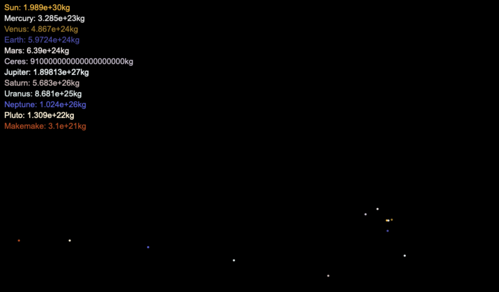

Robert Davis
Hello, I'm Robert Davis, a versatile programmer experienced in Python alongside several other languages. My journey into tech was unconventional—I previously served as a shift leader at Cracker Barrel, where I cultivated leadership and problem-solving skills. Alongside my role, I delved into the world of programming and completed CS50x, a renowned computer science course. This experience broadened my perspective and equipped me with a strong foundation in various programming languages, with a particular focus on Python and C. I enjoy the challenge of unraveling complex problems and crafting elegant solutions. My background in leadership has honed my communication and teamwork skills, which I find invaluable in collaborative coding environments. I'm passionate about technology, constantly exploring new languages and frameworks to stay ahead in this ever-evolving field. I believe in the power of innovation and am excited about the endless possibilities technology offers.
View Portfolio View Resume
Featured Projects
Image Filter Webapp
Flask webpage that allows users to write their own filters using a custom micro programming language to alter user submitted images

Spotify Song Recommender
A Heroku hosted webpage built in a team of 4, we utilized a NearestNeighbor model trained using a Spotify song dataset, and by leveraging Spotify's Search API, we recommend 5 songs that are similar to the user submitted one.

Simply Savings
iOS appstore published app that allows users to keep track of their finances, and enable them to save more than ever
Gravity Sim
Static HTML webpage that utilizing a canvas element simulates gravity between celestial bodies